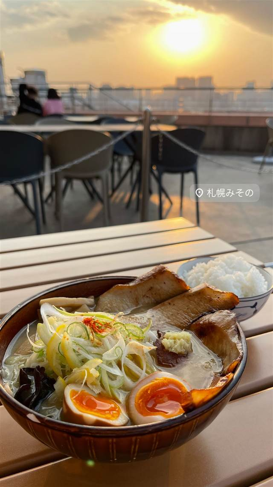

ラーメン · 味噌 · お台場
札幌みそのアクアシティお台場店
日本最北端・稚内産味噌を使った黄色い中太縮れ麺の味噌ラーメン
札幌みその
札幌みそのは、札幌みそラーメンの系譜を引く専門店で、お台場アクアシティ5階のラーメン専門フロアに出店。日本最北端・稚内産の味噌を使った濃厚スープと黄色い中太縮れ麺が特徴で、人気No.1は炙り豚トロチャーシューをのせた一杯。
TRIVIA
豆知識
- 日本最北端・稚内産の味噌を使ったスープが売り
- ラーメン専門店が集まるフロアの一角に出店する札幌ラーメンの店
REVIEWS
世間の評判
87.2ラーメンDB
バター香る味噌と物足りなさの声
- バターや生姜を溶かしながら食べる濃厚な味噌スープを楽しむ声がある
- スープはまろやかだが出汁の弱さや物足りなさを指摘する声もある
- チャーシューがややパサつく、メンマが冷たいなど具材の仕上がりを気にする声もある
ラーメンデータベース 口コミ24件・最新 2026-06
| 系譜 | 1955年に「味の三平」が考案したとされる札幌みそラーメンの系譜に連なる、みそラーメン専門店 |
|---|---|
| 看板 | 味噌ラーメン（黄色い中太縮れ麺・濃厚みそスープ）、人気No.1は炙り豚トロチャーシュー味噌 |
| こだわり | 日本最北端・稚内産の味噌を使ったスープに、中太縮れ麺を合わせる |
| どこから | 都心 |
| 予算 | 昼 ¥1,000～¥1,999 夜 ¥1,000～¥1,999 |
| 場所 | お台場海浜公園駅 東京都港区台場1-7-1 アクアシティお台場5F |
| メモ | お台場「アクアシティお台場」5F、複数のラーメン店が集まるフロア内に出店 |
食べたもの：味噌ラーメン
NEARBY
近い店・同じ系統の店
-
 味噌 池袋駅
味噌麺処 田坂屋
花道庵で5年半修行し公認で独立した濃厚味噌ラーメン
昼 ～¥999 夜 ～¥999
味噌 池袋駅
味噌麺処 田坂屋
花道庵で5年半修行し公認で独立した濃厚味噌ラーメン
昼 ～¥999 夜 ～¥999
-
 味噌 蒲田駅
らーめん蓮 蒲田本店
元プロボクサーの店主が仕上げる泡立てまろやかな味噌らーめん
昼 ¥1,000～¥1,999 夜 ¥1,000～¥1,999
味噌 蒲田駅
らーめん蓮 蒲田本店
元プロボクサーの店主が仕上げる泡立てまろやかな味噌らーめん
昼 ¥1,000～¥1,999 夜 ¥1,000～¥1,999
-
 味噌 地下鉄南北線すすきの駅
らーめん信玄 南6条店
バター味噌ラーメンを考案した元祖店で50時間煮込む清湯スープが看板
昼 ~¥999 夜 ~¥999
味噌 地下鉄南北線すすきの駅
らーめん信玄 南6条店
バター味噌ラーメンを考案した元祖店で50時間煮込む清湯スープが看板
昼 ~¥999 夜 ~¥999
-
 味噌 京橋
東京スタイルみそらーめん ど・みそ 京橋本店
5種の味噌をブレンドした東京スタイルの味噌ラーメン
昼 ¥1,000～¥1,999 夜 ¥1,000～¥1,999
味噌 京橋
東京スタイルみそらーめん ど・みそ 京橋本店
5種の味噌をブレンドした東京スタイルの味噌ラーメン
昼 ¥1,000～¥1,999 夜 ¥1,000～¥1,999
-
 味噌 目黒
純米味噌らーめん なかむら
元二郎系店主がラーメン学校で学んだ香り高い米みそ
昼 ¥1,000～¥1,999 夜 ¥1,000～¥1,999
味噌 目黒
純米味噌らーめん なかむら
元二郎系店主がラーメン学校で学んだ香り高い米みそ
昼 ¥1,000～¥1,999 夜 ¥1,000～¥1,999
-
 味噌 御成門
麺恋処 き楽
代々木の人気店いそじの姉妹店、もちもち麺の豚骨魚介つけ麺
昼 ¥1,000～¥1,999 夜 ¥1,000～¥1,999
味噌 御成門
麺恋処 き楽
代々木の人気店いそじの姉妹店、もちもち麺の豚骨魚介つけ麺
昼 ¥1,000～¥1,999 夜 ¥1,000～¥1,999